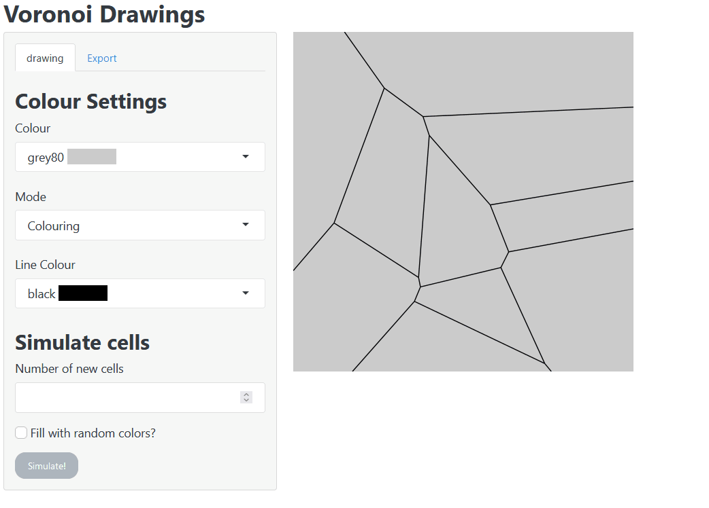

Interactive ggplots, user feedback, and a little bit of Javascript magic with Shiny
I’ve been reading Mastering Shiny by Hadley Wickham lately and one of the things that intrigued me is that you can make ggplots interactive. Though I believe that there are limitation to the level of interactiveness compared to using, say, plotly, I really wanted to practice interactive ggplots with Shiny. Naturally, I build a Shiny app to figure things out. Here’s a demonstration of what the app can do. The rest of this chapter teaches you how some parts of the app were implemented.

Working with clicks
If you have build at least one Shiny app, then you are probably aware that you can include plots on the UI with plotOutput(). (If, in fact, you have never touched Shiny, then feel free to check out how I thought my students the basics of Shiny.) But what you may not know, is that apart from its outputId, width and height arguments, this output function also uses arguments like click and dblclick. These are the secrets to unlocking interactiveness.
Imagine that you have a user interface that includes a plot output via
plotOutput('awesome_plot', click = 'awesome_click')Now, what this small additional argument gives you is a way to access the coordinates of something the user clicks on. What you will have to do is to observe input$awesome_click. Here’s a minimal example of how that works.
library(shiny)
library(ggplot2)
library(dplyr)
ui <- fluidPage(
plotOutput('awesome_plot', click = 'awesome_click'),
)
server <- function(input, output, session) {
# Create dummy data as reactive value
my_dat <- reactiveVal(tibble(x = 3, y = 4, msg = 'Click me'))
# Render plot with fixed coordinate system
output$awesome_plot <- renderPlot({
ggplot(data = my_dat()) +
geom_text(aes(x, y, label = msg), size = 15, vjust = 0, hjust = 0) +
coord_cartesian(xlim = c(0, 7), ylim = c(0, 8))
})
# Update dummy data on click
observeEvent(input$awesome_click, {
my_dat(
my_dat() %>%
mutate(
x = input$awesome_click$x,
y = input$awesome_click$y,
msg = if (runif(1) < 0.5) 'I like that. Do it again.' else 'Stop that!'
)
)
})
}
shinyApp(ui, server)This will give us the following app.

Like a cat, this app is a master of mixed signals and wants to be touched but only a random amount of times. Unlike a cat, the app will show you a plot displaying its latest message at the most recently clicked spot.
All of this is powered by observing changes in input$awesome_click and then using this list’s new x- and y-values to update the reactive value my_dat that underlies the plot. Notice that I have fixed the axes of the plot because otherwise the message will always be displayed in the middle of the plot. After all, the plot will be entirely rebuilt using new underlying data. Fundamentally, this is how I build the ‘color my voronoi’ from above.
But, of course, I have tried out more stuff like user feedback and even some javascript magic. Stick around if you want to learn these ancient skills as well. Destiny is calling.
Let your user know that he messed up and stop him before it’s too late
To my surprise, UI elements like numericInput() do not actually check that an input is valid even though there are arguments like min and max. Of course, a user may end up giving wrong inputs that your app can’t handle. We can’t have that now, can we?
We will need to stop that insubordinate and churlish behavior immediately. In case you recognized that combination of ‘insubordinate’ and ‘churlish’, then I will have you now, yes, this is a reference to Mr. Garvey and the rest of this section is a homage to a skit that makes me giggle every time.
So, let’s build an app that works as follows:

The notifications in this app are all powered through the shinyFeedback package. In order to activate its powers, drop a shinyFeedback::useShinyFeedback() in the UI like so.
library(shiny)
library(dplyr)
ui <- fluidPage(
shinyFeedback::useShinyFeedback(),
h3('A Day with Mr. Garvey'),
textInput(
'name',
'What\'s your name?',
)
)Then, you are all set up to activate warnings and notifications by your server function. Here is a simplified version of the app’s remaining code.
names <- c('Jay Quellin','Jacqueline', 'Balakay', 'Blake', 'Dee-nice', 'Denise',
'Ay-Ay-Ron', 'Aaron')
return_msg <- function(name) {
case_when(
name == 'Balakay' ~ 'My name is Blake.',
name == 'Blake' ~ 'Do you wanna go to war, Balakay? You better check yourself!',
name == 'Jay Quellin' ~ 'Do you mean Jacqueline?',
name == 'Jacqueline' ~ 'So that\'s how it\'s going to be. I got my eye on you Jay Quellin!',
name == 'Dee-nice' ~ 'Do you mean Denise?',
name == 'Denise' ~ 'You say your name right!',
name == 'Ay-Ay-Ron' ~ 'It is pronounced Aaron.',
name == 'Aaron' ~ 'You done messed up Ay-Ay-Ron!'
)
}
server <- function(input, output, session) {
name_input <- reactive(input$name)
observeEvent(name_input(), {
shinyFeedback::feedbackDanger(
'name',
show = (name_input() %in% names),
text = return_msg(name_input())
)
shinyFeedback::feedbackSuccess(
'name',
show = !(name_input() %in% names),
text = 'Thank you!'
)
})
}
shinyApp(ui, server)As you can see, the feedback functions work with
- the
nameof an input, - a rule when to
showup and - a
textto display.
This code is pretty straightforward but, unfortunately, this app does not work like the one you have seen above. There are a couple of problems:
- For starters, if you start the app, then the text input is empty, so
!(name_input() %in% names)is true and the app will immediately display “Thank you!” - After you write a name on the list of defined names, then no warning will be displayed. That is because the later
feedbackSuccess()will always command that there is nothing to display.
Therefore, we need something that stops the feedbackSuccess() from executing when we don’t need it. This can be achieved through the little but powerful req() function. It checks that all given conditions are met or stops the execution where it is. In this case, you will need to drop req(name_input(), !(name_input() %in% names)) in front of feedbackSuccess().
Small technical detail: Notice that name_input() will be '' in the beginning. Technically, this is not a boolean but that doesn’t matter to Shiny. What matters is that '' is not “truthy”. See ?isTruthy for more details.
Now, even with this small change. Our app won’t run smoothly because sometimes the notifaction will not change from “success” to “danger”. This is is because sometimes the notifaction needs to be reseted to work with new notifications. Therefore, a hideFeedback() is in order.
Also, if you are not fast at typing, then a notification might already show up, when you are still typing. It is rude to interrupt our kind user like this. Therefore, let’s make sure our app waits a little before giving out notifications. We can let out app wait for a defined amount of milliseconds by sending our reactive name_input() to debounce(). In total, our server function now looks like this.
server <- function(input, output, session) {
name_input <- reactive(input$name) %>% debounce(250)
observeEvent(name_input(), {
shinyFeedback::hideFeedback('name')
shinyFeedback::feedbackDanger(
'name',
show = (name_input() %in% names),
text = return_msg(name_input())
)
req(name_input(), !(name_input() %in% names))
shinyFeedback::feedbackSuccess(
'name',
show = !(name_input() %in% names),
text = 'Thank you!'
)
})
}Finally, let me mention that, within the function req(), it is also possible to set cancelOutput = TRUE. This stops the code execution as usual but avoids destroying previously displayed outputs.
Sprinkle some javascript magic on top of your app
For my final trick before I disappear into the ether, let me show you a little bit of javascript. As I, myself, do not know much about JS, I am particularly proud that I included some of that web magic into my voronoi coloring app. ‘What did you do?’, you ask? Well, did you notice that the colour dropdown menu in the voronoi app contains the actual colors next to the color names? That is some JS magic right there! Impressive, I know.
To make that work, I had to use the options argument of selectizeInput() together with the render() function and some actual JS code. The whole thing is adapted from this SO post and looks like this:
col2hex <- gplots::col2hex
colorValues <- colors()
colorNames <- glue::glue("{colorValues} <span style='background-color:{col2hex(colorValues)}'>{rep(' ', 15) %>% stringr::str_c(collapse = '')}</span>")
colors <- setNames(colorValues, colorNames)
js_render_string <- I("
{
item: function(item, escape) { return '<div>' + item.label + '</div>'; },
option: function(item, escape) { return '<div>' + item.label + '</div>'; }
}")
selectizeInput(
"color",
"Colour",
selected = 'grey80',
choices = colors,
options = list(render = js_render_string)
)Let’s untangle this step by step. The first part of this code gives us a vector colors containing the color names like “white” and “aliceblue” as values. The same vector also uses names for the vector elements that will be displayed to the user. In principal, this colors vector looks like this:
x <- c('white', 'aliceblue') # no names
x[1] "white" "aliceblue"x <- setNames(x, c('name1', 'name2')) # with names
x name1 name2
"white" "aliceblue" x['name1'] # named vectors can be used like dictionaries name1
"white" In our color example, instead of using arbitrary names, I converted the color names to their hexvalues like #FFFFFF and wrapped those in some HTML code that could potentially look like "<span style='background-color#FFFFFF'>white</span>". This corresponds to the word white with background color #FFFFFF (also white - unspectacular).
But in the actual app I wanted to have colored bars next to the color names. Thus, I have used the HTML code for white space and made this into "white <span style='background-color#FFFFFF'> </span>". Now, to make that color bar longer, I repeated whited space with rep() and glued those into a single string using stringr::str_c(). This is what the vector looks like if I only use two white space repeats.
library(dplyr, warn.conflicts = F)
col2hex <- gplots::col2hex
colorValues <- colors()
colorNames <- glue::glue("{colorValues} <span style='background-color:{col2hex(colorValues)}'>{rep(' ', 2) %>% stringr::str_c(collapse = '')}</span>")
colors <- setNames(colorValues, colorNames)
colors[1]white <span style='background-color:#FFFFFF'> </span>
"white" colors[2]aliceblue <span style='background-color:#F0F8FF'> </span>
"aliceblue" In the dropdown menu of the app the user will see the names of the color vector, i.e. the HTML code and within the server function of our app the selection will then correspond to the actual value of the vector, i.e. the color name without the html stuff.
In our dummy example from above, the user would see name1 and name2 in the dropdown menu but within the server function a user’s selection would correspond to input$color which would evaluate to white or aliceblue.
Clearly, we don’t want the user to see the raw HTML code. This is where JS comes into play. The code that is stored in js_render_string evaluates the HTML code in order to display the actual colors instead of the raw code. Finally, to execute the JS code we need to pass it to the options of selectizeInput via options = list(render = js_render_string).
There you go, this is how I created the color bars in my app using a JS snippet I found on Stackoverflow. You can find the complete codes of the apps we’ve build here (click app), here (notification names app) and here (voronoi coloring app). If you liked this post and want to see more Shiny posts, let me know in the comments or simply hit the applause button below. Of course, you can also always follow my work via Twitter.